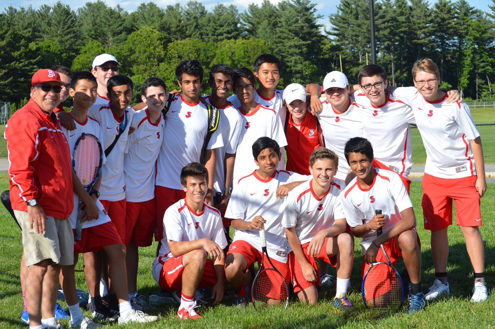

Life Outside School
I like to diversify my life outside of school with activities and extracurriculars that are either educational or recreational. I feel that having a good separation of the two can keep me focused and engaged in each area, so I can learn and have fun effectively.
Sports and Recreation
In terms of physical recreational activity, I am an avid enthusiast of pretty much all Boston sports teams and watch games and keep up with sports news regularly. Throughout my years, I have participated in numerous recreational and competitive sports and leagues. I have played competitive football, basketball, and I was also a member of the Saint John’s Varsity Tennis Team. In my two years at SJ, I predominantly played doubles but have experimented with singles here and there.
Music
I also enjoy listening to both modern and retro music, as well as playing music on my guitar. Modern Hip-hop/Rap is among my top favorite genres, with other additions including Pop, Alternative, and Classic Rock. The Beatles drew me to enjoy oldies music due to the Beatles being the true source of music through which I first learned to play the guitar.
Photography
Photography and Videography has been a passion of mine throughout all my life. Although I do not currently use professional gear (hopefully someday I will be able to), my use of my iPhone 6s and Lightroom Mobile has allowed me to create some cool pictures for the situation.
Extracurriculars
I have partaken in many extracurriculars throughout my life. Some prominent ones that I really enjoyed were MUN or Model United Nations, Math Team, School Newspaper, and many more. MUN was a favorite of mine. I enjoyed the research-of-the-problem phase and displaying it through the speech and debate format. Coming up with solutions together (much like in MAMS) rather than in a competitive format is very appealing to me. My experience in MUN includes attending conferences at Saint John’s, MUNUC (Model United Nations at the University of Chicago), and BUSUN (Brown University Simulation of the United Nations). I have won awards at the MUNUC (honorable mention) and BUSUN (outstanding delegate) conferences.
Cultural Involvement
I also strongly believe in cultural preservation. This led me to become a New England Youth Representative of an organization known as BANA (Bunts Association of North America). I am a Bunt, which is a cultural community that generally originates from the Indian state of Karnataka. We speak a language known as Tulu, which is like the language Kannada. My involvement will be focused on allowing the Bunt youth to have more interaction with the community. I will also be aiding in the convention being held in Manhattan next summer, 2019. Here, many Bunts will come together and indulge themselves in traditional activities and truly understand their heritage. My involvement has led me to learn the languages of my family including Tulu and Hindi.
Volunteering at the Grafton Public Library
My primary spot to volunteer is the Grafton Public Library. It is my local town library and my Mom is a librarian there, so I am really familiar with the staff. I have built some close relationships with patrons and library staff. My responsibilities include shelving books and assisting patrons. Currently, the library is undergoing renovations and is set to reopen in October of 2020. So right now, the library is operating in a repurposed church on the other side of Grafton. To accommodate for all the work in relocating, the director has asked all the volunteer to come back and help as much as possible. I cannot wait to get back and volunteer this summer.

Internship at Congressman Jim McGovern's Office
I have been accepted into the Congressman Jim McGovern’s internship at his local Worcester office for the summer of 2019. My responsibilities include answering phones, running errands, researching legislation, attending hearings and briefings, and answering constituent letters on various issues before the House of Representatives. Interns may be assigned to assist the Congressman’s staff as we help constituents resolve issues with government agencies.